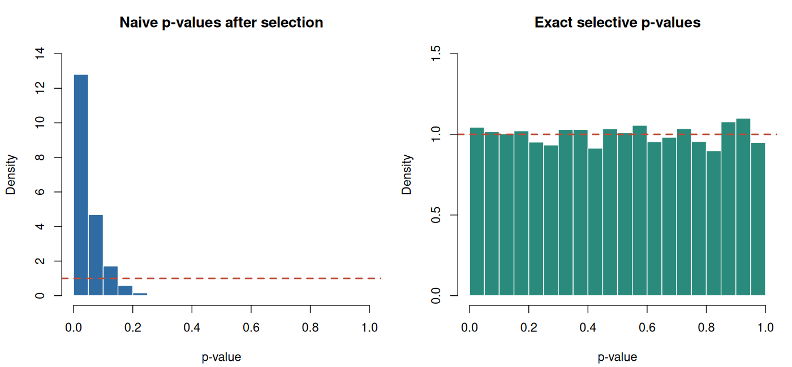

11. Selective inference: asking a question after seeing the data#
Learning objectives#
By the end of this chapter, you should be able to:
distinguish a fixed inferential target from a target selected using observations;
write a conditional Type I error requirement for a selected hypothesis;
derive and compute an exact pivot for the largest absolute Gaussian observation;
explain when sample splitting creates the independence an analysis needs;
identify additional selection steps that a proposed guarantee has not covered.
The preceding chapters allowed the learner to choose a predictor, a comparison, or an action. We now allow the analyst to choose the question. This changes the reference distribution used for inference. A large estimate may be large partly because it won a search.
11.1 A selected parameter is still a parameter#
Suppose that
independently. Each \(\theta_j\) is a fixed unknown number. An analyst inspects all observations and reports
Ties have probability zero under this continuous model; the lab nevertheless uses a deterministic tie rule. The reported target is \(\theta_J\). Its index is random, but the list of possible parameters was defined before observing the data. Saying which parameter was selected is part of specifying the inferential procedure.
For a fixed coordinate, \(2\{1-\Phi(|Z_j|)\}\) is a valid two-sided p-value for \(H_{0j}:\theta_j=0\). Applying that formula to the winner does not retain the same calibration among reported hypotheses. Under the global null, the probability that the winning naïve p-value is below \(\alpha\) is
For \(m=20\) and \(\alpha=0.05\), this is about \(0.642\). Increasing the number of opportunities to find an extreme observation changes the distribution of the reported statistic even though each original measurement remains well calibrated.
11.2 What probability should be controlled?#
One selective requirement is, for each eligible \(j\) and every parameter vector satisfying \(\theta_j=0\),
Other coordinates need not have zero means. This is a statement about errors among repetitions in which the procedure asks question \(j\). It differs from familywise error control across a collection of simultaneous rejections. A method can be designed for either goal, but the goal must be stated.
Conditioning more finely can simplify computation. We will also condition on the sign of the selected observation and on the unselected observations. If the resulting p-value is uniform under each such conditional distribution, averaging over the additional information preserves the desired selective calibration. Conditioning discards information, so computational convenience can have a power cost.
Fithian, Sun, and Taylor formulate this connection between selection, conditional error, and information loss in Optimal Inference After Model Selection.
11.3 Deriving an exact selected-Gaussian pivot#
Fix a selected index \(j\), the observed unselected vector \(z_{-j}\), and the selected sign \(s\in\{-1,1\}\). Define
Before selection, \(T\sim N(s\theta_j,1)\) and is independent of \(Z_{-j}\). The selection event with sign \(s\) is simply \(T\geq c\). Consequently,
Under \(H_{0j}\), an upper-tail conditional p-value is
This upper tail tests extremeness in the direction selected by the data, while conditioning on that direction. It is not a claim that the direction was specified in advance. The probability integral transform gives a uniform p-value under the conditional null. The conditioning threshold \(c\) is therefore an essential part of the calculation.
For numerical stability, evaluate the ratio by subtracting log survival probabilities and exponentiating. Direct subtraction of a normal CDF from one loses precision for extreme observations.
Example 11.1 — A large observation with a strong competitor
Let \(z=(2.4,-1.7,0.5)\). Coordinate 1 is selected, its sign is positive, and \(c=1.7\). The ordinary two-sided p-value is approximately \(0.0164\). The selective value is
The observation is unusual for an unselected standard normal, but much less unusual among positive observations known to exceed \(1.7\). This calculation does not establish that \(\theta_1=0\). It explains why the original reference distribution overstates the evidence against that hypothesis.
Example 11.2 — A global-null test answers a different question
Under \(\theta_1=\cdots=\theta_m=0\), the maximum \(M=\max_j|Z_j|\) has CDF
Thus \(1-\{2\Phi(M)-1\}^{m}\) is an exact global-null p-value. It tests whether all coordinates have mean zero. The conditional p-value above instead targets the selected coordinate and permits other means to be nonzero. Substituting one for the other changes the null hypothesis.
11.4 From a one-dimensional truncation to polyhedral selection#
For Gaussian data \(Y\sim N(\mu,\Sigma)\), consider a linear contrast \(\eta^\top Y\) and a selection event \(AY\leq b\). Define
Then \(\operatorname{Cov}(R,T)=0\), so Gaussianity makes \(R\) and \(T\) independent. Once \(R=r\) is fixed, each selection inequality becomes a bound on the scalar \(T\):
Intersecting these bounds gives a truncation interval, possibly with zero-probability or vacuous cases. Conditional on \(R\) and selection, \(T\) follows its original Gaussian law restricted to that interval. This is the central geometric idea behind the polyhedral approach of Lee, Sun, Sun, and Taylor (2016).
The assumptions matter: this derivation uses Gaussianity, known covariance, and an affine description of the selection event. An arbitrary clustering or tuning pipeline need not produce one polyhedron. The next chapters use different selection geometry.
11.5 What splitting does and does not provide#
If an independent discovery dataset chooses a fixed hypothesis and an untouched inference dataset supports a valid test of that hypothesis, ordinary inference can be conditionally valid given discovery. The price is reduced information at each stage.
Independence must concern the inferential information, not just a convenient division of row numbers. If held-out observations are assigned to clusters using the same features subsequently tested, their group membership still depends on the test observations. Similarly, selecting a threshold after viewing validation errors is another selection operation. A complete analysis records the question, the information that selected it, and the information used to answer it.
11.6 Reproducible R laboratory#
The script compares naïve and selective rejection rates under the global null and checks selected null coordinates when one other coordinate has a nonzero mean. It also reports Monte Carlo standard errors. An empirical rejection rate near \(0.05\) is useful validation of this implementation; the exact guarantee comes from the derivation, not the simulation.
Code
# Chapter 11: exact selected-Gaussian inference. Base R only.
# Run with: Rscript labs/11-selective-inference.R
# Optional plots: set COURSE_FIGURE_DIR to an existing or new directory.
set.seed(2026102111)
options(width = 100)
selected_tests <- function(z) {
stopifnot(is.matrix(z), ncol(z) >= 2L)
winner <- max.col(abs(z), ties.method = "first")
t_obs <- abs(z[cbind(seq_len(nrow(z)), winner)])
competitors <- abs(z)
competitors[cbind(seq_len(nrow(z)), winner)] <- -Inf
threshold <- apply(competitors, 1L, max)
log_tail <- pnorm(t_obs, lower.tail = FALSE, log.p = TRUE)
log_denom <- pnorm(threshold, lower.tail = FALSE, log.p = TRUE)
data.frame(
winner = winner, statistic = t_obs, threshold = threshold,
naive = 2 * exp(log_tail),
selective = pmin(1, exp(log_tail - log_denom))
)
}
cat("Example 11.1\n")
print(selected_tests(matrix(c(2.4, -1.7, 0.5), nrow = 1)), digits = 5,
row.names = FALSE)
repetitions <- 10000L
coordinates <- 20L
alpha <- 0.05
z_null <- matrix(rnorm(repetitions * coordinates),
nrow = repetitions, ncol = coordinates)
null_result <- selected_tests(z_null)
z_signal <- matrix(rnorm(repetitions * coordinates),
nrow = repetitions, ncol = coordinates)
z_signal[, 1L] <- z_signal[, 1L] + 2.5
signal_result <- selected_tests(z_signal)
selected_null <- signal_result$winner != 1L
summarize_p <- function(label, p_values) {
rejected <- mean(p_values <= alpha)
data.frame(
procedure = label, repetitions = length(p_values),
rejection_rate = rejected,
monte_carlo_se = sqrt(rejected * (1 - rejected) / length(p_values))
)
}
summary_table <- rbind(
summarize_p("Global null: naive selected test", null_result$naive),
summarize_p("Global null: exact selective test", null_result$selective),
summarize_p("One signal: selected null coordinates",
signal_result$selective[selected_null])
)
cat("\nSimulation calibration (alpha = 0.05)\n")
print(summary_table, digits = 4, row.names = FALSE)
cat("\nTheoretical global-null naive rejection rate:",
format(1 - (1 - alpha)^coordinates, digits = 6), "\n")
cat("Known variance = 1; coordinates independent; no estimated nuisance parameters.\n")
stopifnot(all(is.finite(null_result$selective)),
all(null_result$selective >= 0 & null_result$selective <= 1))
plot_dir <- Sys.getenv("COURSE_FIGURE_DIR", unset = "")
if (nzchar(plot_dir)) {
dir.create(plot_dir, recursive = TRUE, showWarnings = FALSE)
png(file.path(plot_dir, "11-selective-inference.png"),
width = 1400, height = 650, res = 130)
old_par <- par(mfrow = c(1, 2), mar = c(4.2, 4.2, 3, 1))
hist(null_result$naive, breaks = seq(0, 1, by = 0.05), freq = FALSE,
col = "#2f6ca3", border = "white",
main = "Naive p-values after selection", xlab = "p-value", ylim = c(0, 14))
abline(h = 1, col = "#bd4b38", lwd = 2, lty = 2)
hist(null_result$selective, breaks = seq(0, 1, by = 0.05), freq = FALSE,
col = "#2a8a7c", border = "white",
main = "Exact selective p-values", xlab = "p-value", ylim = c(0, 1.5))
abline(h = 1, col = "#bd4b38", lwd = 2, lty = 2)
par(old_par)
invisible(dev.off())
}
Computed output#
Output
Example 11.1
winner statistic threshold naive selective
1 2.4 1.7 0.016395 0.18394
Simulation calibration (alpha = 0.05)
procedure repetitions rejection_rate monte_carlo_se
Global null: naive selected test 10000 0.64010 0.004800
Global null: exact selective test 10000 0.05220 0.002224
One signal: selected null coordinates 3683 0.05539 0.003769
Theoretical global-null naive rejection rate: 0.641514
Known variance = 1; coordinates independent; no estimated nuisance parameters.


Exercises#
Exercise 11.1. Derive \(1-(1-\alpha)^m\) for the naïve selected test under the global null. What happens as \(m\) grows?
Exercise 11.2. Prove that the conditional p-value is uniform when \(\theta_j=0\), conditional on \(Z_{-j}\), \(J=j\), and the selected sign. Explain why the other means may be nonzero.
Exercise 11.3. Derive the lower and upper truncation bounds for \(AY\leq b\) after fixing \(R=r\). Treat rows with \((Av)_i=0\).
Exercise 11.4. A researcher selects the largest effect, reports its ordinary 95% interval, and applies a Bonferroni correction to a separate list of p-values. Has the interval acquired conditional 95% coverage? State the missing argument.
Solutions#
Solution to Exercise 11.1
Each ordinary two-sided p-value is independent uniform under the global null. The selected p-value is their minimum. Its probability of exceeding \(\alpha\) is \((1-\alpha)^m\), so its rejection probability is the complement. For fixed \(\alpha>0\), this probability tends to one.
Solution to Exercise 11.2
Given the conditioning information, \(T\) has standard-normal density restricted to \([c,\infty)\). Its conditional survival function is \(\bar\Phi(t)/\bar\Phi(c)\). Applying that survival function to a continuous random variable with this law gives a uniform random variable. Independence makes the conditional distribution of \(Z_j\) unaffected by the observed other coordinates before truncation; their unknown means therefore do not enter this pivot.
Solution to Exercise 11.3
Write \(a_i=(Av)_i\) and \(d_i=b_i-(Ar)_i\). Positive \(a_i\) produce upper bounds \(d_i/a_i\); negative \(a_i\) produce lower bounds \(d_i/a_i\). Their intersection is
with infinite endpoints when a set of bounds is empty. For \(a_i=0\), require \(0\leq d_i\); otherwise the conditional selection event is impossible.
Solution to Exercise 11.4
No. Altering the p-values of another procedure does not alter the reported interval or prove its conditional coverage. A simultaneous confidence procedure could justify a different familywise coverage statement, while a selective interval requires inversion of tests or another argument under the stated conditioning event. The researcher must identify the desired coverage probability and construct an interval satisfying it.
Reading and next step#
Core: Fithian, W., Sun, D., and Taylor, J. Optimal Inference After Model Selection. arXiv:1410.2597, 2014, revised 2017. Read the introduction and the definition of selective error.
Core excerpts: Lee, J. D., Sun, D. L., Sun, Y., and Taylor, J. E. (2016). Exact post-selection inference, with application to the lasso. Annals of Statistics 44, 907–927. Published paper, especially the polyhedral argument.
Next we replace the selected coordinate with a pair of groups produced by hierarchical clustering. The same requirement—account for how the question was chosen—remains, but the statistic and selection event change.